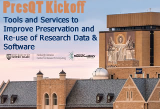

Time: Monday, September 17 12PM-5PM EDT
Tuesday, September 18 9:00AM -3:30 PM
Location:
Collaboration Hub Fl 2 Room 231
Hesburgh Library
Notre Dame, Indiana 46556
A implementation phase kickoff event focused on Tools and Services to Improve Preservation and Re-use of Research Data & Software
This Preservation Quality Tool (PresQT) Implementation meeting is designed to expand on priorities identified during the Planning Grant phase and to prioritize technical and administrative implementation plans for open source Data and Software Preservation Quality Tools. Meeting participants will gather to take the project’s planning phase priorities forward and work together to jointly develop, support, test and inform implementation phase projects and priorities.
Participate:We seek participation from research data and software interoperability platform providers, developers, data curators, repository managers, librarians, digital preservationists, scientists and editors/publishers.
PresQT aims to complement existing repository infrastructure and more deeply integrate workflow and software preservation tools with an aim toward data preservation that facilitates scientific reuse and experimental reproducibility.
For information about hotel accommodations, visit the Morris Inn.For more information on visiting Notre DameSee Visitors' Campus info.
Questions? email the PresQT Team (This email address is being protected from spambots. You need JavaScript enabled to view it.).